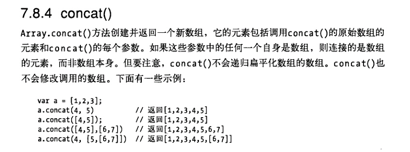
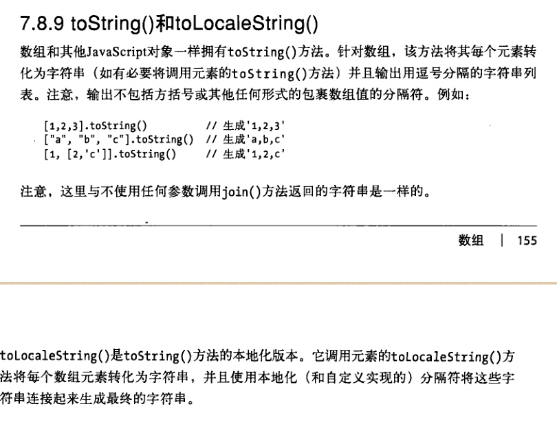
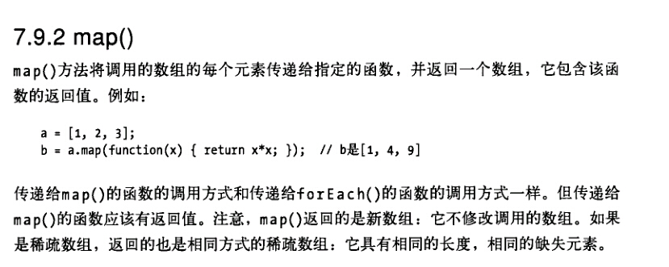
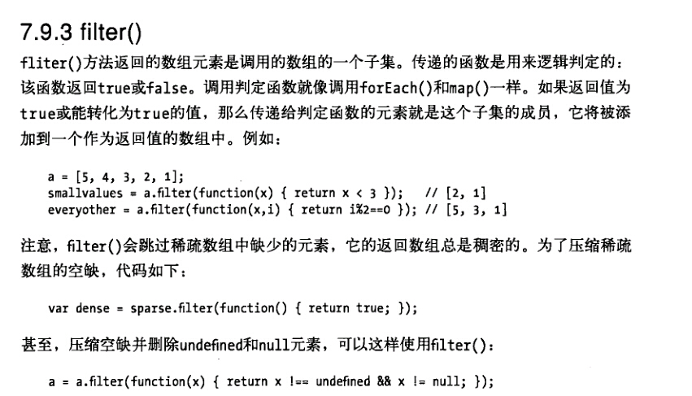
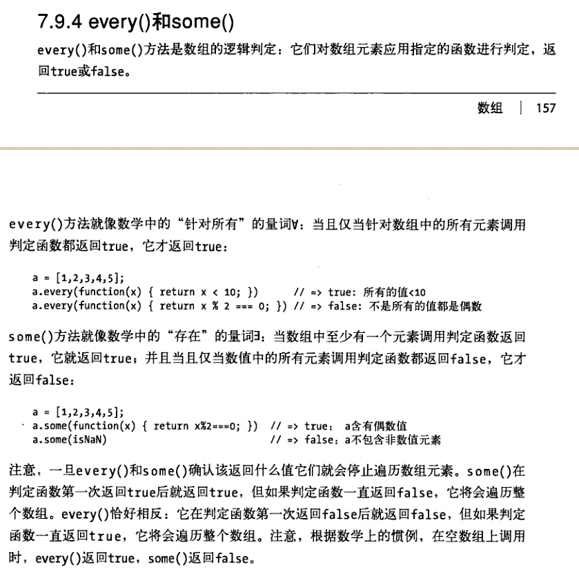
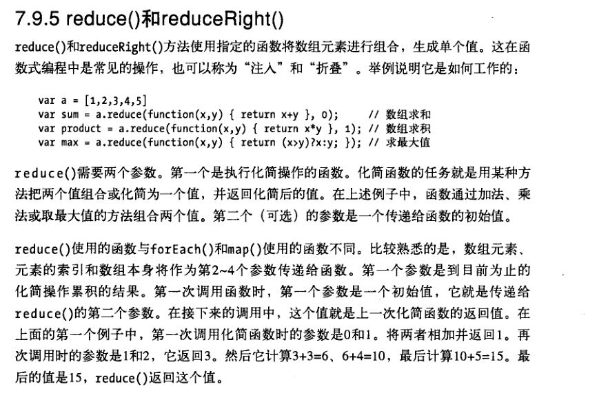
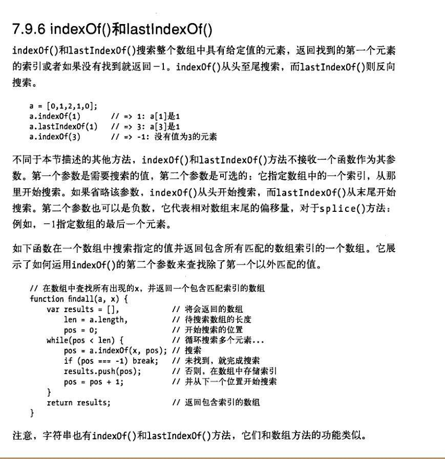

join()
join()方法将数组中所有元素都转化为字符串并连接在一起，返回最后生成的字符串

reverse()
reverse()方法将数组中的元素颠倒顺序并返回逆序的数组

sort()

concat()
slice()

push(),pop()
push()可在数组的最后添加元素，并返回修改后的数组长度
pop()删除数组最后一位元素，并返回删除的元素值
unshift(),shift()
unshift(),shift()和push(),pop()同理;区别是unshift,shift是处理的数组的第一个元素
unshift()是一次性插入所有元素在数组的最前面

toString(),toLocaleString()
toString()将其每个元素转化为字符串，并且输出用逗号分隔的字符串列表
forEach()
forEach()可使用的参数有3个，数组元素，元素的索引和数组本身.
如果只关心数组元素的值，可以编写只有一个参数的函数，其他的参数将会被忽略
map()
map()方法将调用的数组的每个元素传递给指定的函数，并返回一个数组，他包含该函数的返回值
filter()
filter()方法返回的是数组元素的子集
some(),every()
相当于且和或的判断,some或，every且
reduce()和reduceRight()
使用指定的函数将数组元素进行组合，生成单个值。如数组求和数组求积，求和，求最大值
indexOf()和lastIndexOf()
搜索整个数组中具有给定值的元素，返回找到的第一个元素的索引或者如果没有找到就返回-1。
